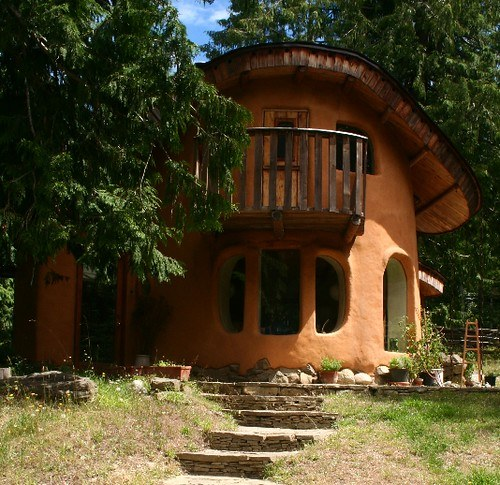

What I help with
Earthward is here to move you through the land use approval process, so you can pursue a values-aligned life and a nourishing future.
| Service | What that looks like |
|---|---|
| Zoning and property research | Plain-language answers about what your property allows and what limits it. |
| Land divisions and lot potential | Early feasibility for partitions and lot layouts, so you know what's realistic before you spend money. |
| Natural building | Land use review for cob, straw bale, and earthen homes of all types. I'll help you work out how they fit within zoning and permitting. |
| ADUs and tiny homes | Backyard cottages and accessory dwellings. I'll find out what's allowed on your lot and how to get there. |
| Rural and farm properties | Homesites, farm structures, and small homesteads. Understand the rules before you buy or build. |
| Community projects | Shared households, intentional communities, and gathering spaces. |
| Connecting to resources | Recommendations for values-aligned architects, contractors, and natural builders. |
Not sure where your project fits?
Tell me about it. The first call is free.
How it works Contact me